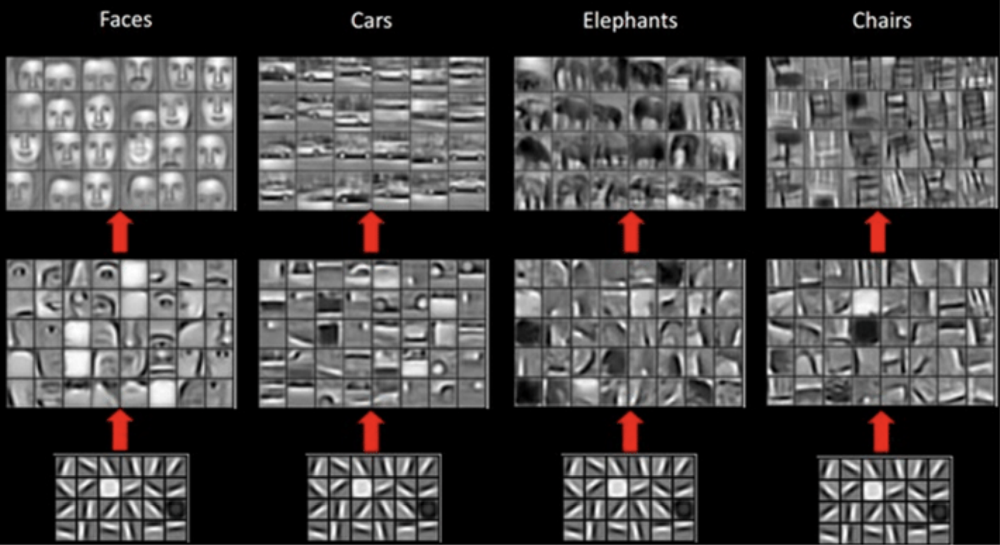

Computer Vision
Overview
C++
Data Science
Leading/Mentoring
Drawing
Khan Academy
Driving
The Topic
- What is Computer Vision (CV)
- What problems it solves
- How it is being solved
- Use cases
What is Computer Vision?
Computer vision is the automated extraction of information from images. Information can mean anything from 3D models, camera position, object detection and recognition to grouping and searching image content.
What is needed for?
Just for fun.
The goal of computer vision is to understand the content of digital images. Typically, this involves developing methods that attempt to reproduce the capability of human vision.
Small Example: Image Captioning

Context of computer vision as a field
Related Fields
- Artificial Intelligence
- Information engineering
- Solid-state physics
- Neurobiology
- Signal processing
- And more
CV vs CO
Extract metadata from the image.
Transform the image.
Both together combined with automated controls.
Examples of image processing
Normalizing photometric properties of the image, such as brightness or color.
Cropping the bounds of the image, such as centering an object in a photograph.
Removing digital noise from an image, such as digital artifacts from low light levels.
Computer vision tasks
What broad category of object is in this photograph?
Which type of a given object is in this photograph?
Object Verification
Object Detection
What are the key points for the object in the photograph?
What pixels belong to the object in the image?
What objects are in this photograph and where are they?
Computer Vision Pipeline
Image Data
The image data can take many forms, such as video sequences, views from multiple cameras, or multidimensional data from a medical scanner.RGB Image
Image sequence
Video

360 shot
Google Street View or similar
Infrared satellite images
Thermal Vision
Tomography Scans
History of Computer Vision
Marvin Minsky
In 1966, it was believed that this [Computer Vision] could be achieved through a summer project, by attaching a camera to a computer and having it "describe what it saw"
Papert, Seymour (1966-07-01). "The Summer Vision Project". MIT AI Memos (1959 - 2004).
Papert, Seymour (1966-07-01). "The Summer Vision Project". MIT AI Memos (1959 - 2004).
1960s: The Beginning
- Begin at universities
- It was meant to mimic the human vision system
- It was believed that CV could be achieved by simple rules
1970s: Foundation
- Edge detection
- Line detection
- Optical Flow and Motion Estimation
Lenna
November 1972 issue of Playboy magazine
1980s: Getting Mathy
- Mathematical analysis
- Shapes extraction
- Contour models
1990s: Going 3D
- Projective 3D reconstruction
- First attempts on Object Segmentation
- Eigenface
2000s: Object Detection
SIFT
2000s: Object Detection
HOG (1986 -> 1994)
2000s: Object Detection
Sliding Window Object Detection
2010s: Deep Learning

AlexNet is the name of a convolutional neural network (CNN), designed by Alex Krizhevsky in 2012, and published with Ilya Sutskever and Krizhevsky's doctoral advisor Geoffrey Hinton. The architecture won an ImageNet competition. (wiki)
Nowadays
Use Cases
Optical character recognition (OCR)

Machine inspection
Retail
Automated checkouts
3D model building
Photogrammetry
Medical imaging
Automotive safety
ADAS
Match move
merging CGI with live actors in movies
Motion capture (mocap)
Surveillance
Fingerprint recognition and biometrics
Amazon Go
Tesla Autopilot
Video